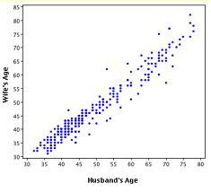
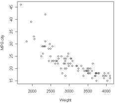
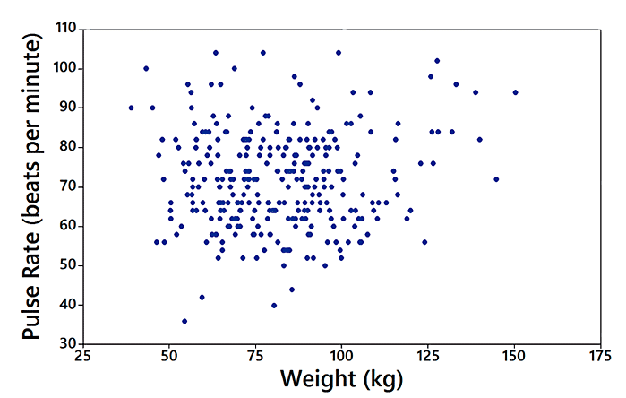
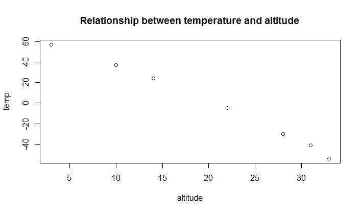
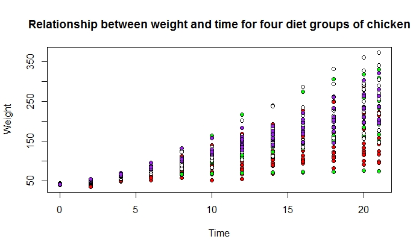

Construct Scatter plots
Introduction
A scatter plot is a plot of paired (x,y) data with a horizontal x-axis and a vertical y-axis. The horizontal axis is used for the independent variable (x), and the vertical axis is used for the dependent variable (y). A scatter plot shows the relationship between two quantitative variables (x and y). Each data point represents one individual.
Knowledge
If a scatter plot shows a pattern of approximately a straight line, then we say there is a linear correlation between the two quantitative variables. If the straight line goes from the origin to high x- and y-values (bottom left to top right), then the two variables are said to have a positive correlation. If the straight line goes from high values on the y-axis down to low y-values but high x-values (top left to bottom right), then the variables have a negative correlation. If the data points are very close to a straight line, then we say the two variables have a strong correlation. If the data points are scattered further around a line, then we say there is a weak (or no) correlation between the two variables. Figure 1 a, b, and c show the positive, negative and no correlation.
 
Figure 1.a), b), c)
Figure 1.a) A positive correlation between husband’s age and wife’s age; b) A negative correlation between cars’ weight and miles per gallon; and c) no correlation between cars’ weight and the pulse rate of the drivers
The R function to make a scatter plot is
plot(x,y, main= , xlab= , ylab= )
or
plot(y~x, data=)
x: vector of data showing the x (independent variable) values of the individuals
y: vector of data showing the y (dependent variable) values of the individuals
main: title of the graph
xlab: label of the x-axis
ylab: label of the y-axis
A Youtube video on how to generate a scatter plot in R is here
https://www.youtube.com/watch?v=yyXtiGCDOBo
Key Points to Remember
A scatter plot shows the relationship between two quantitative variables. The relationship can be positive, negative or no correlation. The R function is plot().
The presence of a correlation between two variables is not evidence that one of the variables causes the other. Correlation does not imply causation.
Practice and Reflection
Practice
Example 1: The temperature may associated with altitude. The research recorded the temperature at 7 altitudes, starting at 6327 feet. Use the scatter plot to show the relationship between altitude and temperature
| Altitude | 3 | 10 | 14 | 22 | 28 | 31 | 33 |
| Temperature | 57 | 37 | 24 | -5 | -30 | -41 | -54 |
The R code is
The scatter plot is shown in figure 2 below

Figure 2. Scatter plot of the relationship between temperature and altitude.
Example 2: In the ChickeWeight data in R datasets, there are four Diet groups. Use the scatter plot to show the relationship between the weight and time for the four different diet groups. Show different color for the diet groups.
The R code is:
The graph is shown in figure 3.

Figure 3. Scatter plot of the relationship between weight and time for the four types of diets.
Reflection
Activity 1: The table below lists weight and price of randomly selected six diamonds. All of the diamonds are round with rating of “very good” cut, and they all have color rating of F and clarity rating of VSI. Generate a scatter plot to show the relationship between price and weight
| Weight | 0.3 | 0.4 | 0.5 | 0.5 | 1.0 | 0.7 |
| Price | 510 | 1151 | 1343 | 1410 | 5669 | 2277 |
Assessment
The data below shows the systolic blood pressure (SBP) and age for males and females. Generate a scatter plot to show the relationship between SBP and age for males and females separately using different color
| SBP | 132 | 143 | 153 | 137 | 162 | 154 | 168 | 149 | 159 | 128 | 166 |
| Age | 52 | 59 | 67 | 54 | 73 | 64 | 74 | 61 | 65 | 46 | 72 |
| Gender | male | female | female | male | male | male | male | male | female | female | female |
We are interested in investigating the relationship between the percentage of children who have been immunized and the corresponding mortality rate for children under five in a country. We believe that the mortality rate for children under five in a country decreases as more children received vaccines. The table listed the data of the percentage of immunized children and the mortality rate for a randomly chosen 9 countries.
| Country | Percentage immunized | Mortality rate per 1000 births |
|---|---|---|
| Bolivia | 77 | 118 |
| Cambodia | 32 | 184 |
| China | 94 | 43 |
| Czech Republic | 99 | 12 |
| Egypt | 89 | 55 |
| Ethiopia | 13 | 208 |
| Mexico | 91 | 33 |
| Senegal | 47 | 145 |
| Turkey | 76 | 87 |
Make a scatter plot to show the relationship between the percentage immunized and the mortality rate. Add title to the graph. Make the points solid and blue.